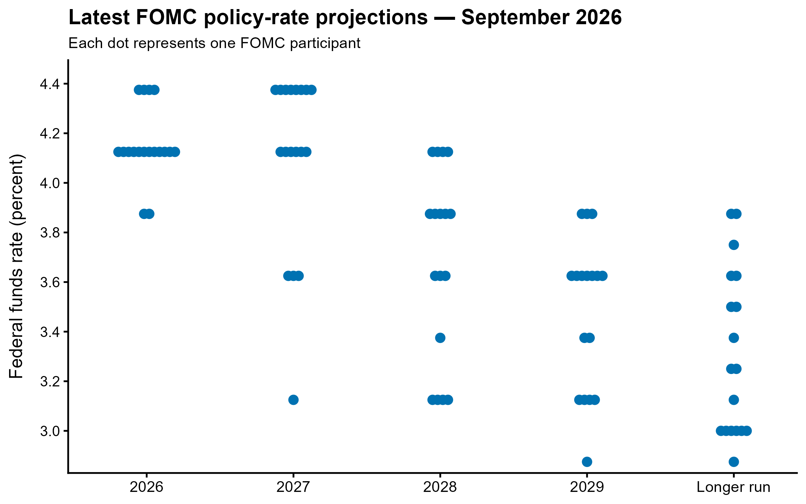
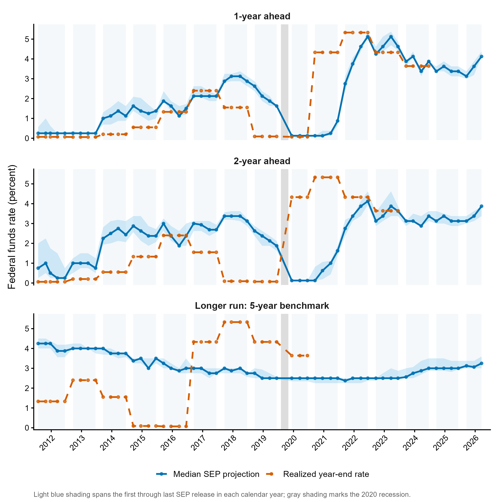
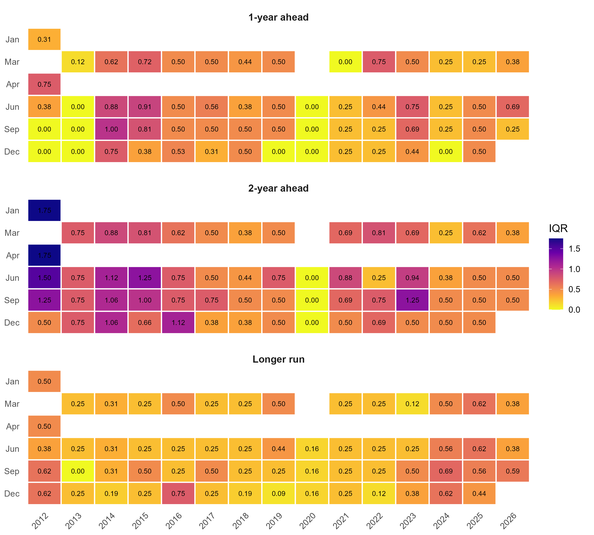

Beyond the Dots — a database of FOMC
policy-rate projections
Beyond the Dots is a public research resource that provides a consistent, citable database of individual-level federal funds rate projections from the Federal Reserve’s Summary of Economic Projections (SEP). By reconstructing the historical dot plots and organizing them into a longitudinal dataset, the hope is that this resource will help researchers study the evolution of monetary policy expectations, disagreement among policymakers, and the relationship between projected and subsequently realized policy rates. The site provides regularly updated data, visualizations, methodological documentation, and reproducible code for researchers, and others interested in U.S. monetary policy.
Visualizations

Latest SEP Dot Plot
See the most recent participant-level projections for the federal funds rate.
View figure →
Projections vs. Realized Rates
Compare median SEP projections and participant dispersion with subsequently realized policy rates.
View figure →
Policy-Rate Disagreement
Track the cross-sectional IQR of participant projections across horizons and over time.
View figure →Disclaimer
Beyond the Dots is an independent research project and is not affiliated with, endorsed by, or sponsored by the Board of Governors of the Federal Reserve System or any Federal Reserve Bank. The data and visualizations are compiled from publicly available sources and are provided for research, educational, and informational purposes only. Although reasonable efforts are made to ensure accuracy, all materials are provided “as is.” Users should verify information against official Federal Reserve sources when accuracy is critical. Beyond the Dots and its contributors accept no responsibility or liability for errors, omissions, or losses arising from use of the materials. Nothing on this site constitutes financial, investment, legal, or policy advice.